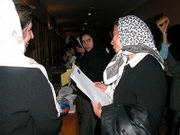

پذيرش > كوچه به كوچه > تو حقوق خودتو مي گيري، ما رو تو درد سر ننداز! / سميه حسيني


 تو حقوق خودتو مي گيري، ما رو تو درد سر ننداز! / سميه حسيني تو حقوق خودتو مي گيري، ما رو تو درد سر ننداز! / سميه حسيني
22 اسفند 1385 - - نسخه قابل چاپ
سر مزار مادر بزرگم كه تازه فوت كرده بود نشسته بودم و به گذشته ها فكر مي كردم... به روزهاي رفته... به كودكي هاي بي دغدغه و شاد... فارغ از آينده هاي بي رحم... فارغ از حس تلخ نابرابري ... و به روزهاي با او بودن... به او... كه يك زن واقعي بود.
غرق در افكارم بودم كه صدايي من را متوجه خودش كرد: «خانوم, قرآن بخوانم؟» سرم را بلند كردم. قبلا هم او را ديده بودم. در همين قبرستان... سر قبرها قرآن مي خواند. از او خواستم چند لحظه اي كنارم بنشيند و به حرف هايم گوش دهد. به راحتي پذيرفت. از زندگي اش پرسيدم... از خودش... از اينكه چرا اينجاست؟ و او هم كه انگار دنبال كسي بود كه بتواند حرفش را به او بزند، سفره ي دلش را باز كرد و گفت و گفت: از اينكه زن اول يك مرد سه زنه است. شوهرش هر از چندگاهي سري به آنها مي زند و بدون هيچ كمكي آنها را ترك مي كند. 7 تا بچه دارد و به غير از دو دختري كه ازدواج كرده اند (و آنها هم زندگي زناشويي موفقي ندارند) بقيه فرزندان با او هستند. و باز هم گفت... ازخشونت هاي شوهرش... و از دردهايي كه بخاطر او كشيده. من هم گوش مي كردم و سعي مي كردم دلداري اش دهم.
برگه ي يك ميليون امضا را از كيفم درآوردم و در خصوص كمپين و اهدافش براي او توضيح دادم... از مواد بيانيه، از حقوق نابرابر زنان در ديه، ارث، شهادت، حضانت و... خصوصا مساله ي تعدد زوجات كه او خود قرباني اين به اصطلاح قانون بود. برايش گفتم و او هم شنيد و پذيرفت. چرا كه انگار آن چيزي را مي شنيد كه خود قبلا تجربه كرده بود... چون سواد نداشت مشخصاتش رو در برگه نوشتم و او هم امضا كرد و درحالي كه هر دو براي هم آرزوي موفقيت كرديم از او جدا شدم.
ضمن بازگشت به خانمي برخوردم كه دستفروشي مي كرد. با خانم ديگري غرق صحبت بود. با خودم فكر كردم كه اينها هم مي توانند مورد خوبي براي صحبت در خصوص كمپين باشند. رفتم جلو و از آنها خواستم تا چند دقيقه اي وقتشان را به من دهند. اول از آنها سوالاتي پرسيدم از اينكه چقدر از حق و حقوق خود خبر دارند و بعد رفتم سر توضيحات خودم. خب آنها هم مثل خيلي هاي ديگر موارد بسياري را مي دانستند و چيزهايي هم برايشان مبهم بود. درد آشنا بودند و رنج كشيده.
در مورد اهداف كمپين براي آنها گفتم و اين كه يك ميليون امضا راهیست براي تغيير قوانين تبعيض آميز... اسم امضا را كه شنيدند دچار ترديد شدند و يكي از آنها انگار چيزي به ذهنش رسيده باشد به من گفت: «دخترم، شما داري كار مي كني و حقوق خودتو مي گيري و واسه كار خودت اومدي سراغ ما بيچاره ها. مثه خيلي هاي ديگه كه ميان و ميرن و شعار ميدن و هيچ اتفاقي هم نميفته، اگر امضا كنيم ممكنه برامون دردسر شه و...» من هم كه اتفاقا همان روز براي گرفتن جواب درخواست كاري كه مدت ها پيش به مركزي داده بودم مراجعه كرده بودم و طبق معمول «نه» شنيده بودم، براي آنها گفتم كه الان دارم از كجا مي آيم و چه جوابي گرفته ام. توضيح دادم كه كمپين يك ميليون امضا هم يك حركت خودجوش و مردمي ست و افراد به ميل خود در اين زمينه فعاليت دارند و هيچ كس بابت امضاهايي كه جمع مي كند حقوقي نمي گيرد و هيچ اجباري هم در گرفتن امضا نيست اما حتي يك امضا هم ما را يك قدم به هدفمان نزديكتر مي كند. تأكيد كردم كه من اين كار را به ميل خودم و به اميد رهايي همه ي زنان وطنم از بند تبعيض و بي عدالتي و به خاطر رسيدن به حقوق واقعي و طبيعي خودم - به عنوان يك زن- انجام مي دهم. با گفتن اين حرف ها اعتمادشان بيشتر شد.
برگه را امضا كردند و كلي هم دعاي خير به جان من.
من خوشحال از گرفتن سه پاسخ «آري» آن هم در چنين مكانی، در حالي كه با خودم فكر مي كردم امضاي بعدي در كجا و از چه كسي مي تواند باشد آنجا را ترك كردم.
ارسال به
بالاترین
،
توییتر
،
فریندفید
،
فیسبوک
در همين بخش :
 روايت بيست و پنجمين شهريور / نرگس طیبات روايت بيست و پنجمين شهريور / نرگس طیبات
وقتی آتش خاموش شود/فرشته نوبخت
آن گاه که زن شدم / ویژه نامه 8 مارس 1391
چیزی زیر پوست این شهر می جوشد / دلارام علی
گرسنگی / وبلاگ سیب و سرگشتگی
ديگر بخش ها :
طرح یک میلیون امضا
|
مقالات
|
سایت نوشته ها
|
اخبار
|
گزارش كمپين
|
گفت و گو
|
علیه سکوت
|
كوچه به كوچه
|
نامه های شما
|
گزارش ویژه
|
گفتگو با اعضا
|
ویژه سالگرد کمپین
|
تصویر برابری
|
دل آرام علی
|
تریبون
|
مقالات
|
تاریخ شفاهی
|
خارج از چارچوب
|
کتابخانه
|
درباره کمپین
|
کمپین در شهرها
|
کمپین در بند
|
صدای تغییر
|
ویژه 22 خرداد
|
لایحه حمایت از خانواده
|
گالری
|
عشا مومنی
|
امیر یعقوبعلی
|
خدیجه مقدم
|
راحله عسگری زاده و نسیم خسروی
|
پروین اردلان،جلوه جواهری، مریم حسین خواه، ناهید کشاورز
|
زینب پیغمبرزاده
|
سعیده امین، سارا ایمانیان، محبوبه حسین زاده، ناهید کشاورز و همایون نامی
|
احترام شادفر
|
نسیم سرابندی زاده،فاطمه دهدشتی
|
وبلاگ مهمان
|
پرونده خرم آباد
|
دستگیری ها
|
مریم مالک
|
پرستو اللهیاری
|
مهرنوش اعتمادی
|
سمیه رشیدی
|
Other Languages
|
همراهان
|
«فراخوان کمپین ده روز با بهاره هدایت»
| English
|